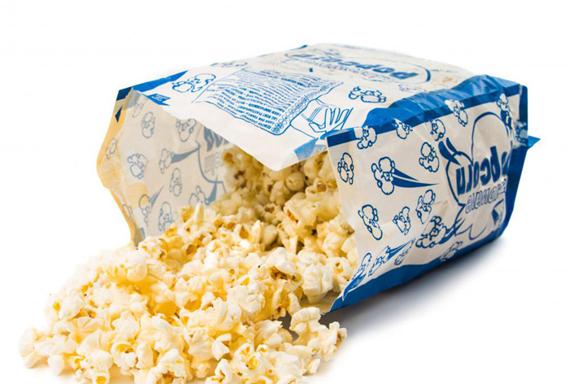

Nguy hiểm chết người từ 14 món ăn quen thuộc
Bắp rang bơ đút lò

- Trên thị trường hiện có nhập khẩu và bán các loại bắp nổ khô chế biến sẵn. Loại bắp này được sấy khô và đóng gói, người dùng chỉ cần bỏ bịch
bắp vào lò vi sóng cho nó bung ra là có thể dùng ngay. Tuy nhiên, các nghiên cứu trên động vật cho thấy những thành phần hóa học trong bịch giấy
gói bắp khi gặp nhiệt sẽ sản sinh ra các chất làm tăng nguy cơ ung thư, vô sinh và các bệnh nguy hiểm khác. Lời khuyên cho các bạn là nên tự làm
bắp rang bơ chứ đừng mua loại chế biến sẵn đóng gói. Bắp tự làm vừa ngon, vừa bổ dưỡng.
Khoai tây
- Khoai tây chứa một chất độc tự nhiên trong mầm và lá. Khoai tây để lâu ngày sẽ xuất hiện mầm và mảng xanh bám ngoài vỏ, độc tố ngày càng nặng và gây nguy
hiểm chết người. Người bình thường chỉ cần ăn khoảng 2 miligram chất độc này sẽ gặp triệu chứng đau bụng, tiêu chảy và nhức đầu. Hấp thụ từ 3 đến 6 miligram
thì khả năng tử vong là rất cao. Do đó, tốt nhất nên bỏ khoai tây đã mọc mầm hoặc xuất hiện mảng xanh.
Táo
- Mặc dù ăn táo rất tốt cho sức khỏe, song không thể bỏ qua nguy hiểm từ thuốc trừ sâu. Táo có nguy cơ nhiễm thuốc trừ sâu rất cao, do đó cần rửa trái
cây thật sạch trước khi dùng và gọt vỏ cho an tâm. Ngoài ra, hạt táo còn chứa các chất hóa học khi phân hủy sẽ tạo thành chất độc cyanide. Tuy nhiên, cứ
yên tâm vì khối lượng chất độc trong hạt táo rất nhỏ nên khả năng gây nguy hiểm là rất thấp.
Cà phê
- Thức uống quen thuộc này tiềm ẩn khá nhiều nguy cơ đáng ngại. Cà phê nóng có thể gây bỏng nghiêm trọng nếu bạn lỡ tay làm đổ lên người. Ngoài ra, nó làm tăng
nhịp tim và gây bồn chồn, do đó những ai có vấn đề về tim mạch hay khó ngủ nên hạn chế sử dụng nếu không muốn tình trạng trầm trọng hơn. Cà phê có nhiều tác
dụng phụ nên nhớ là chỉ dùng dưới 2 ly một ngày bạn nhé!
Trứng
- Trứng sống chứa một loại vi sinh vật tên là Salmonella, gây nên một số triệu chứng như nôn mửa, tiêu chảy, ngộ độc. Vậy nên sau khi mua trứng về nhà bạn cần cho
ngay nó vào tủ lạnh. Khi chiên trứng, tốt nhất nên chiên kĩ đến khi lòng đỏ chín vàng. Những ai bụng hơi yếu không nên ăn trứng chín tái, trứng chần lòng đào.
Bột bánh quy
Nướng bánh quy cũng không tránh khỏi nguy cơ nhiễm độc. Bột bánh sống chứa trứng sống và do đó tiềm ẩn nguy cơ gây ngộ độc từ vi khuẩn Salmonella. Ngoài ra, nếu vệ
sinh không cẩn thận thì các loại vi khuẩn từ tô, chén, đĩa bẩn, thớt bẩn, tay rửa không sạch… đều có thể là nguyên nhân gây ngộ độc thực phẩm. Vậy nên tuyệt
đối không nên nếm bột bánh chưa nướng.
Thịt chế biến sẵn
- Không mấy bất ngờ khi các nhà nghiên cứu khuyến cáo người dân không nên sử dụng thịt hộp, thịt xông khói, thịt đã qua chế biến thường xuyên. Các chất bảo quản
cùng hàm lượng muối cao trong các loại thịt này dẫn tới nguy cơ mắc các bệnh ung thư, tim mạch.
Hotdog
- Hotdog gây nguy hiểm không phải vì thành phần chế biến, mà vì chính hình dáng của nó. Chiếc hotdog hoàn toàn có khả năng làm nghẹn đường hô hấp gây tử vong.
Loại thực phẩm này đặc biệt nguy hiểm đối với trẻ em dưới 10 tuổi, do đó các bậc phụ huynh nên nhắc nhở con cắn miếng nhỏ và nhai kĩ.
Rau
- Rau cải rất tốt cho sức khỏe, nhưng chỉ khi bạn đã rửa sạch và để ráo chúng thật cẩn thận. Nếu không thì như đã nói ở trên, khả năng bị ngộ độc từ
thuốc trừ sâu là không thể xem thường.
Ớt
- Đối với những ai có da nhạy cảm, xắt ớt bằng tay trần có thể gây nóng và sưng tấy làn da. Ớt càng cay thì người nấu ăn càng thêm đau đớn. Do đó bạn nên dùng đũa
giữ ớt khi cắt để tránh bị dính nước tiết ra từ ớt .
Cá ngừ
- Ăn cá ngừ quá thường xuyên sẽ gây nguy hiểm khôn lường đến sức khỏe. Nguyên nhân là do cá ngừ hay bị nhiễm thủy ngân. Ăn cá ngừ thường xuyên hơn 2 bữa tuần
có thể làm tích tụ thủy ngân trong não bộ, làm tắc nghẽn các mạch máu, làm bạn hóa điên và tử vong!
Gạo
- Thuốc trừ sâu và các loại phân bón hóa học trong cây lúa làm tăng nguy cơ mắc các bệnh tiểu đường, ung thư bàng quang, bệnh về tim mạch. Đó là lý
do bạn cần vo gạo kĩ trước khi nấu.
Hạt điều sống
- Hạt điều sống chứa chất độc thường thấy trong cây thường xuân, do đó nên mua loại đã được sấy, hấp hoặc rang muối. Nếu ăn phải chất độc trong hạt điều,
bạn có thể bị tiêu chảy, ngộ độc. Tệ hơn nữa là nếu bạn bị dị ứng với cây thường xuân, có thể bạn sẽ tử vong tức thì nếu không kịp cấp cứu.
Thịt sống
- Thịt sống có thể cho là loại thực phẩm nguy hiểm nhất trong căn bếp nhà bạn. Các vi khuẩn nguy hiểm như Salmonella và E-coli là nguyên nhân hàng đầu gây
ngộ độc thực phẩm. Khi chế biến thịt sống, cần chú ý rửa tay và các dụng cụ làm bếp thật kĩ. Không để thịt sống chung với các loại thực phẩm khác để tránh
lây vi khuẩn. Khi nấu thịt, cần nấu chín kĩ ở nhiệt độ cao nhằm diệt sạch vi khuẩn. Nếu chưa dùng ngay thì cần lập tức bỏ thịt vào tủ lạnh để ngăn chặn vi khuẩn sinh sôi.